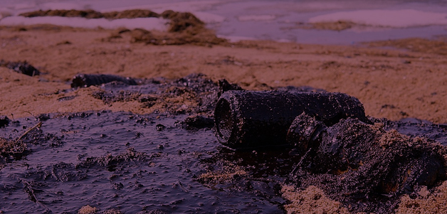

Ууух, наверное, одна из самых распространенных проблем современности, тут даже говорить нечего. Загрязнение может быть самым разным начиная от выброшенного окурка, заканчивая выбросами тонн мусора в природное пространство. На данный момент человечество не может понять, что природу надо беречь. А что Беларусь? Наша страна - не исключение, вообще-то Минск входит в список самых загрязненных городом Европы, так что есть чему постыдиться.
Да, особенно в нашей стране, эта проблема в приоритете. Загрязнение может быть биологическим, механическим, физическим и химическим. Помимо этого, загрязнения разделяют еще по параметрам:
- тепловое
- шумовое
- световое
- радиационное
- электромагнитное

Кроме того, человечество ежесекундно выбрасывает тонны газообразных отходов в земную атмосферу, вы только представьте, мы этим еще и дышем. Кроме атмосферы страдают и внутрение воды, загрязненные больше всего, в следствие чего, это обостряет проблему недостатка питьевой воды.Дым из дымоходов, заводов, транспортных средств или от сжигания древесины и угля делают воздух токсичным. Очевидны также последствия загрязнения воздуха. Выброс диоксида серы и опасных газов в атмосферу вызывает глобальное потепление и кислотные дожди, которые, в свою очередь, повышают температуру, провоцируя чрезмерные осадки или засухи во всем мире, и усложняет жизнь животных. Мы также дышем каждой загрязненной частицей из воздуха и в результате увеличивается риск астмы, и рака лёгких. Так что, давайте вместе задумаемся о последствия каждый раз, когда захотим выбросить мусор не в положенное место, ведь жить в чистоте намного приятней :)